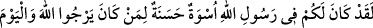
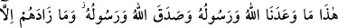
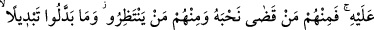
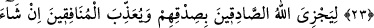
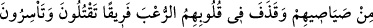
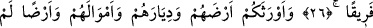
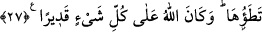

RASÛLULLAH SİZİN İÇİN
EN GÜZEL ÖRNEKTİR
21. Andolsun ki, Rasûlullah, sizin için, Allâh’a ve ahiret gününe kavuşmayı
umanlar ve Allâh’ı çok zikredenler için güzel bir örnektir.
22. Mü’minler ise, düşman birliklerini gördüklerinde: “İşte Allah ve Rasûlü’nün
bize vâdettiği! Allah ve Rasûlü doğru söylemiştir.” dediler. Bu (orduların gelişi),
onların ancak îmanlarını ve Allâh’a bağlılıklarını arttırdı.
23. Mü’minler içinde Allâh’a verdikleri sözde duran nice erler var. İşte onlardan
kimi, sözünü yerine getirip o yolda canını vermiştir; kimi de (şehitliği)
beklemektedir. Onlar hiçbir şekilde (sözlerini) değiştirmemişlerdir.
24. Çünkü Allah sadâkat gösterenleri sadâkatları sebebiyle mükâfatlandıracak,
münafıklara -dilerse- azap edecek yahut da (tevbe ederlerse) tevbelerini kabul
edecektir. Şüphesiz Allah, bağışlayandır, esirgeyendir.
25. Allah, o inkâr edenleri hiçbir fayda elde edemeden öfkeleri ile geri çevirdi.
Allah(ın yardımı) savaşta mü’minlere yetti. Allah güçlüdür, mutlak galiptir.
26. Allah, ehl-i kitaptan, onlara (müşrik ordularına) yardım edenleri kalelerinden
indirdi ve kalplerine korku düşürdü; bir kısmını öldürüyor, bir kısmını da esir